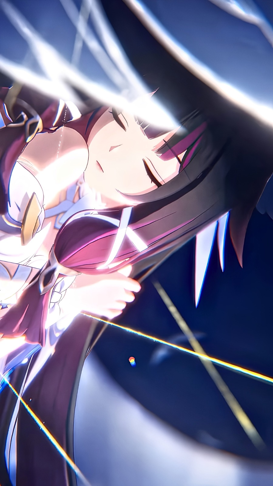
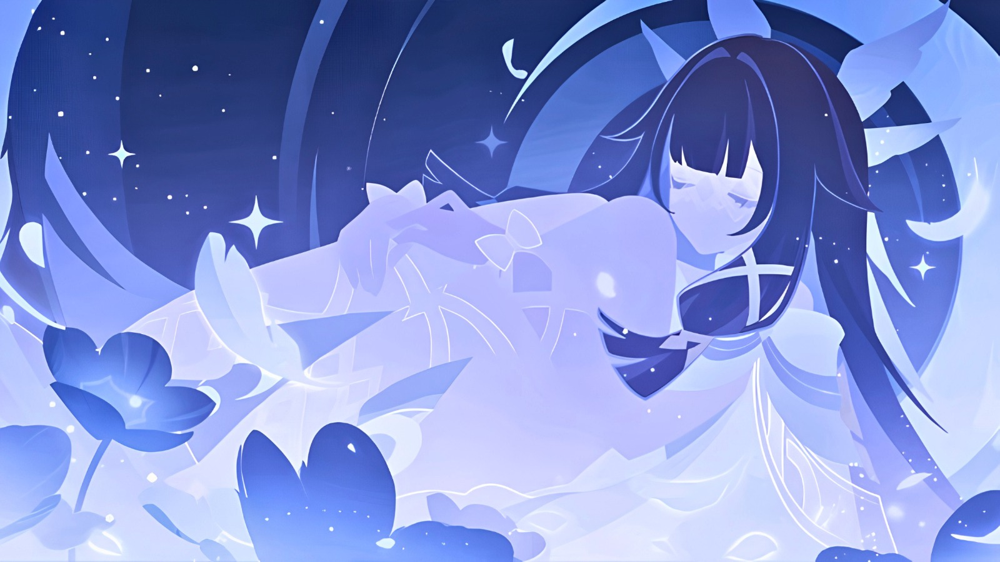
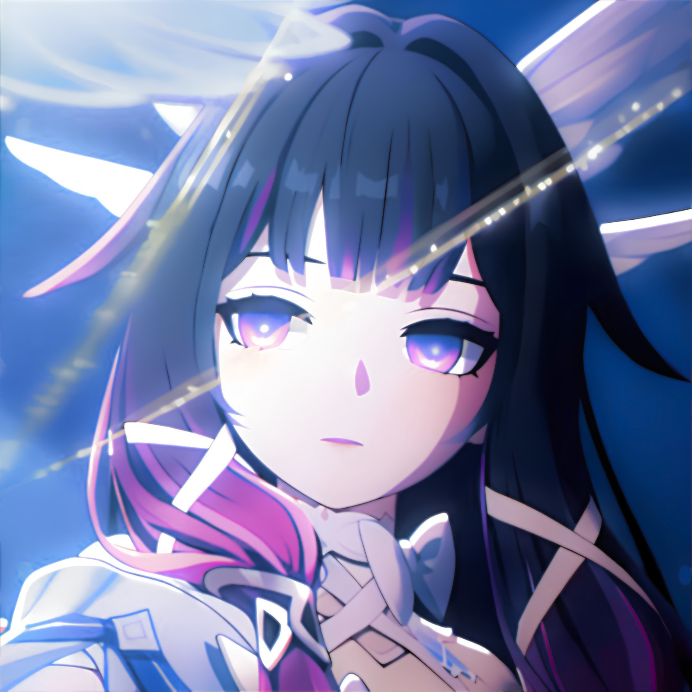

Third Seat of the Eleven Fatui Harbingers who later deserts the organization to reclaim her true identity as the Moon Goddess of the Frost Moon. Known for her eerie, angelic demeanor and the lace mask covering her closed eyes, she eventually leaves Snezhnaya for her homeland of Nod-Krai.
Columbina
Columbina Hyposelenia, also known by her Fatui codename "The Damselette,"


